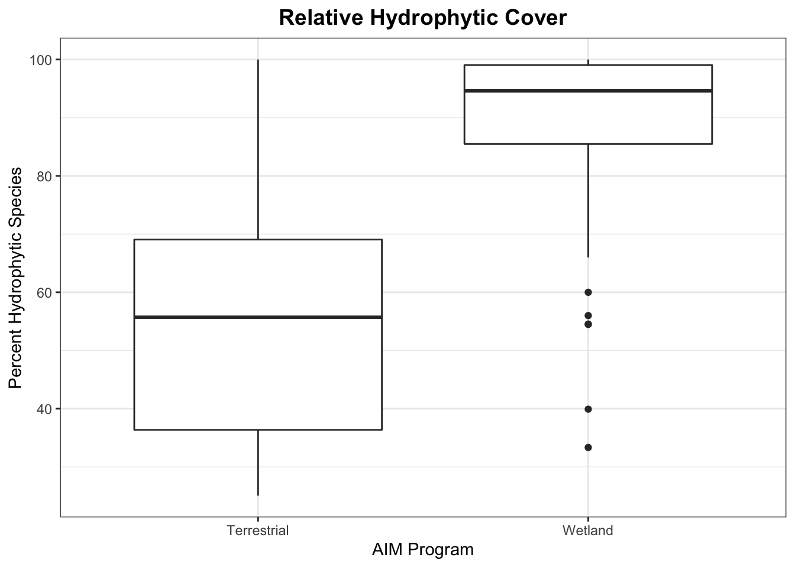
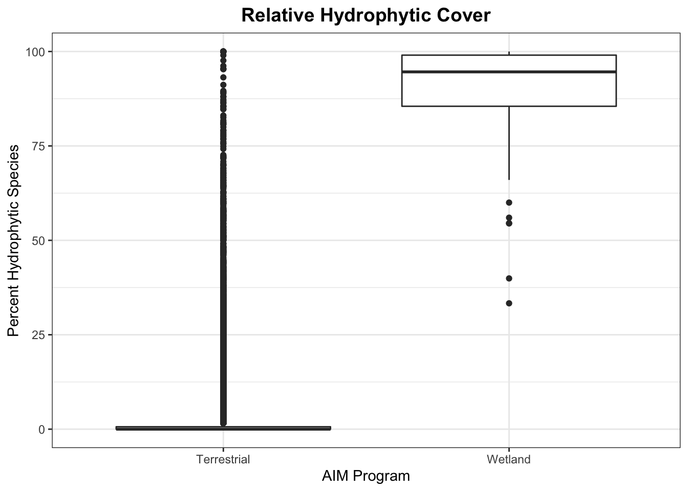

Chapter 7 Initial Analyses
knitr::opts_chunk$set(echo = TRUE)
library(tidyverse)
library(ggplot2)
library(rgbif)
library(ggthemes)7.1 Load the data
7.1.1 Wetland AIM data
LPIcover2019_CO<-read.csv("/Users/elinbinck/Documents/Grad_School/Thesis/R_project/Thesis_Research/data/WetlandAIM/LPIcover2019_CO.csv") %>%
mutate(year = 2019)
LPIcover2019_UT<-read.csv("/Users/elinbinck/Documents/Grad_School/Thesis/R_project/Thesis_Research/data/WetlandAIM/LPIcover2019_UT.csv") %>%
mutate(year = 2019)
#these are all *absolute metrics*
WetAIMIndicators2020<-read.csv("/Users/elinbinck/Documents/Grad_School/Thesis/R_project/Thesis_Research/data/WetlandAIM/WetAIMIndicators2020.csv") %>%
mutate(year = 2020) %>%
rename(Plot.ID = PlotID)
WetAIM.Relative.Cover2020<- read.csv("/Users/elinbinck/Documents/Grad_School/Thesis/R_project/Thesis_Research/data/WetlandAIM/ALL_RelativeCoverMetrics2020.csv") %>%
mutate(year = 2020) %>%
rename(Plot.ID = PlotID)
#why are there two hydrophyte columns??
hydrophytes<-WetAIMIndicators2020 %>%
select(Plot.ID, CommunityLPIPctHydroFAC, HydroFACCover)7.1.2 Terrestrial AIM data
#load this info for later use
header <- readRDS("/Users/elinbinck/Documents/Grad_School/Thesis/R_project/Thesis_Research/data/AIM_tall_tables_export_2021-09-21/header.Rdata")
StateSpecies<- read.csv("/Users/elinbinck/Documents/Grad_School/Thesis/R_project/Thesis_Research/data/ExportedTerrestrial_Data/tblStateSpecies.csv")
RelativeCover<- read.csv("/Users/elinbinck/Documents/Grad_School/Thesis/R_project/Thesis_Research/data/RelativeCover.csv")
lpi_CorrectCodes<-read.csv("/Users/elinbinck/Documents/Grad_School/Thesis/R_project/Thesis_Research/data/lpi_tall_CorrectCodes.csv")
#this is the table that contains elevation data for each transect
tblLines <- read.csv("/Users/elinbinck/Documents/Grad_School/Thesis/R_project/Thesis_Research/data/ExportedTerrestrial_data/tblLines.csv")
#load the final 25-50 hydrophytic data that matched the queries
all25to50<-read.csv("/Users/elinbinck/Documents/Grad_School/Thesis/R_project/Thesis_Research/data/Btwn25and50hydrophytic/all25to50.csv")
over50<-read.csv("/Users/elinbinck/Documents/Grad_School/Thesis/R_project/Thesis_Research/data/over50hydrophytic.csv") %>%
select(PrimaryKey, PlotPercent)
#Load all of the points with 25-50% (before running queries) to get the percent hydrophytic back to the all25to50 data
between25to50hydrophytic<-read.csv("/Users/elinbinck/Documents/Grad_School/Thesis/R_project/Thesis_Research/data/25to50hydrophytic.csv") %>%
select(PrimaryKey, PlotPercent)
#left join to get the percent hydrophytic on to all25to50
all25to50<-all25to50 %>%
left_join(between25to50hydrophytic) ## Joining, by = "PrimaryKey"7.2 Percent Hydrophytic
7.2.1 Terrestrial “wetlands” sites with Wetland AIM sites
#pull out the hydrophytic cover from the wetland AIM datasets
CO2019.hydroCover<-LPIcover2019_CO %>%
select(Plot.ID, Relative.HydrophyteFAC.Cover) %>%
rename(HydroFACCover = Relative.HydrophyteFAC.Cover)
UT2019.hydroCover<-LPIcover2019_UT%>%
select(Plot.ID, Relative.HydrophyteFAC.Cover) %>%
rename(HydroFACCover = Relative.HydrophyteFAC.Cover)
all2020.hydroCoverREL<-WetAIM.Relative.Cover2020 %>%
select(Plot.ID, RelativeHydroFACCover) %>%
rename(HydroFACCover = RelativeHydroFACCover) %>%
mutate(HydroFACCover = HydroFACCover/100)
#merge all of the Wetland data together
WetAIMhydrophytic<-rbind(CO2019.hydroCover, UT2019.hydroCover, all2020.hydroCoverREL) %>%
mutate(source = "Wetland") %>%
rename(HydroCover = HydroFACCover)
#now combine all the data for simpler plotting
all.sites<-rbind(Terr.Wetlands, WetAIMhydrophytic)
ggplot()+
geom_boxplot(data = all.sites, aes(x = source, y = (HydroCover*100)))+
theme_bw()+
labs(x = "AIM Program",
y = "Percent Hydrophytic Species",
title = "Relative Hydrophytic Cover")+
theme(plot.title = element_text(size = 14, hjust = 0.5, face = "bold"))## Warning: Removed 3 rows containing non-finite values (stat_boxplot). ### All Terrestrial sites with Wetland AIM sites
#I think this only has sites that have FAC or wetter plants - go back to CalculatePercentCover.Rmd and change that somewhere...
TerrRelCovHydro <- read.csv("/Users/elinbinck/Documents/Grad_School/Thesis/R_project/Thesis_Research/data/RelHydroCover.csv") %>%
mutate(source = "Terrestrial") %>%
rename(HydroCover = PlotPercent, Plot.ID = PrimaryKey)
all.sites.allTerr<-rbind(TerrRelCovHydro, WetAIMhydrophytic)
ggplot()+
geom_boxplot(data = all.sites.allTerr, aes(x = source, y = (HydroCover*100)))+
theme_bw()+
labs(x = "AIM Program",
y = "Percent Hydrophytic Species",
title = "Relative Hydrophytic Cover")+
theme(plot.title = element_text(size = 14, hjust = 0.5, face = "bold"))## Warning: Removed 3 rows containing non-finite values (stat_boxplot).
7.3 Percent Native/Noxious
7.3.1 Calculate Relative cover for Terrestrial wetlands
Here I will need to attach states from Header, and if species are noxious from state species, assuming these are state specific. I will also need to load in the lpi tall table info with all of the species in order to calculate the metrics.
#Attach states to the Terrestrial data
#first, extract the state for each plot
states<-header %>%
select(PrimaryKey, State)
#then, add that info to the terrestrial wetlands
Terr.Wetlands.state<-Terr.Wetlands %>%
left_join(states, by = c("Plot.ID" = "PrimaryKey"))
#next match up all the lpi data for those plots
Terr.Wet.lpi<-Terr.Wetlands.state %>%
inner_join(lpi_CorrectCodes, by = c("Plot.ID" = "PrimaryKey")) %>%
select(Plot.ID, HydroCover, source.x, State, LineKey, layer,SpeciesCode, CorrectSpeciesCode2, PointNbr)
#create an object with species codes, whether they are noxious or not, and the corresponding state for that info
noxious.info<- StateSpecies %>%
select(SpeciesCode, Noxious, SpeciesState) %>%
distinct(.)
unique(noxious.info$Noxious)## [1] "NO" "YES" "" "No" "Yes" "NO "#try to join the noxious info to the lpi data... hopefully this won't create duplicates?
Terr.Wet.noxious<-Terr.Wet.lpi %>%
left_join(noxious.info, by =c("SpeciesCode", "State" = "SpeciesState"))
#Now calculate the number of noxious species and calculate relative percent cover
Terr.Rel.Noxious<-Terr.Wet.noxious %>%
group_by(Plot.ID, LineKey) %>%
mutate(NumPlantHits = length(LineKey)) %>%
mutate(Noxious = if_else(Noxious == "YES" | Noxious == "Yes", 1, 0, missing = 0)) %>%
group_by(Plot.ID, LineKey) %>%
summarise(NumNoxiousHits = sum(Noxious), NumPlantHits) %>%
summarise(RelativeNoxCoverLine = NumNoxiousHits/NumPlantHits) %>%
group_by(Plot.ID) %>%
summarise(RelativeNoxCoverPlot = mean(RelativeNoxCoverLine)) %>%
mutate(source = "Terrestrial")## `summarise()` has grouped output by 'Plot.ID', 'LineKey'. You can override
## using the `.groups` argument.
## `summarise()` has grouped output by 'Plot.ID', 'LineKey'. You can override
## using the `.groups` argument.To be continued…